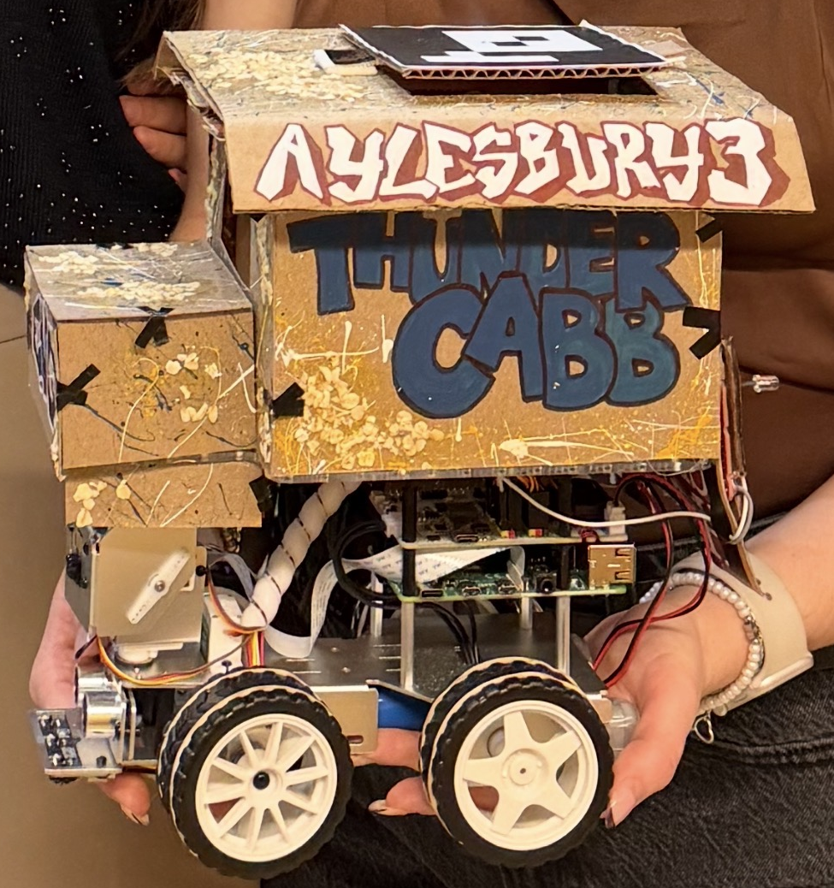

Autonomous Taxi Cab

From winter to spring 2026, I worked on the autonomous taxi cab project as a part of the ELEC 392: Engineering Design and Development Course at Queen's University. I worked alongside three other electrical and computer engineering student to design, build, and test a full autonomous stack utilizing a Picar-X. This robot was equipped with a Raspberry Pi 4, camera, ultrasonic sensor, grayscale module, and Google Coral TPU. The final project goal was to navigate the robot through Quackston, a town of rubber ducks, to pick-up and drop-off points while obeying traffic laws and avoiding obstacles. We could find available fares and find our GPS location via the Vehicle Fare and Positioning System (VPFS), as set-up by the instructors, through API calls.
The Architecture
The architecture was built around the following systems: Perception, Estimation, Planning, and Control. Perception collects signals from the hardware and outputs detections, Estimation receives those outputs and produces an approximation of the state of the vehicle and its environment, Planning takes the estimate and produces an overall path and current trajectory, Control uses the goal trajectory to calculate and perform the immediate action and sends this output as signals to the motors, signal lights, brake lights, and speaker.My Roles
Each group member was assigned a technical and logistical role to ensure the project was completed efficiently.
- Control Lead: I was responsible for the Control System, which meant designing a PID controller to execute the steering commands for the vehicle. I also served as the primary member for system integration, ensuring that all systems could effectively communicate.
- Meeting Lead: I was responsible for planning the weekly meetings and setting the project timeline. I planned weekly sprints, working with all the different schedules to ensure we were on track to complete the project.
My Contributions
With my former experience in autonomous vehicle development through my design team,
When you are ready, rename this file and update the link on the home page
(index.html) so the photo points here.